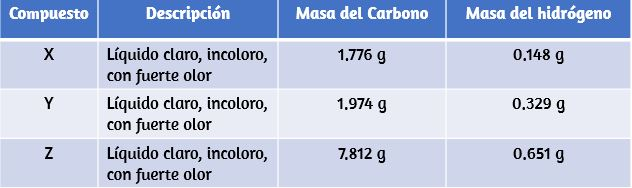

Preguntas y problemas - Capítulo II
2.1 Ideas tempranas en la teoría atómica
1. En el siguiente dibujo, las esferas verdes representan átomos de un elemento determinado. Las esferas moradas representan átomos de otro elemento. Si las esferas de diferentes elementos se tocan, son parte de una sola unidad de un compuesto. El siguiente cambio químico representado por estas esferas puede violar una de las ideas de la teoría atómica de Dalton. ¿Cúal?.

2. ¿Qué postulado de la teoría de Dalton es consistente con la siguiente observación con respecto a los pesos de los reactivos y productos? Cuando se calientan 100 gramos de carbonato de calcio sólido, se producen 44 gramos de dióxido de carbono y 56 gramos de óxido de calcio.
3. Identifique el postulado de la teoría de Dalton que se viola por las siguientes observaciones: 59.95% de una muestra de dióxido de titanio es titanio; 60.10% de una muestra diferente de dióxido de titanio es titanio.
4. Analiza las muestras del compuesto X, Y y Z ,y observe los resultados que se muestran en la tabla.

¿Estos datos proporcionan ejemplo (s) de la ley de proporciones definidas, la ley de proporciones múltiples, ninguna o ambas? ¿Qué te dicen estos datos sobre los compuestos X, Y y Z?
2.2 Evolución de la teoría atómica
5. La existencia de isótopos viola una de las ideas originales de la teoría atómica de Dalton. ¿Cúal?
6. ¿En qué se parecen los electrones y los protones? ¿En qué se diferencian?
7. ¿En qué se parecen los protones y los neutrones? ¿En qué se diferencian?
8-9. Predecir y probar el comportamiento de las partículas α disparadas contra un átomo modelo de “pudín de ciruela”.
(a) Predice los caminos que toman las partículas "α" que se disparan a los átomos con la estructura del modelo de pudín de ciruelas de Thomson. Explica por qué esperas que las partículas α tomen estos caminos.
(b) Si las partículas "α" de mayor energía que las de (a) se disparan contra átomos de pudín de ciruela, prediga cómo sus trayectorias diferirán de las trayectorias de partículas α de menor energía. Explique su razonamiento.
(c) Ahora prueba tus predicciones de (a) y (b). Abra la simulación de dispersión de Rutherford (simulador)y seleccione la pestaña "pudín de ciruelas". Establecer "partículas alfa Energía "min", y selecciona" mostrar rastros ". Haz clic en el arma para comenzar a disparar partículas "α". ¿Coincide esto con tu predicción de (a)? Si no, explique por qué la ruta real sería la que se muestra en la simulación. Presione el botón de pausa, o "Restablecer todo". Ajuste "Energía de partículas alfa" max ", y comience a disparar partículas "α". ¿Coincide esto con tu predicción de (b)? Si no, explique el efecto del aumento de energía en las rutas reales como se muestra en la simulación.
2.3 Estructura atómica y simbolismo
10. ¿De qué manera los isótopos de un elemento dado son siempre diferentes? ¿De qué manera (s) son siempre iguales?
11. Escribe el símbolo para cada uno de los siguientes iones:
(a) el ión con una carga de 1+, el número atómico 55 y el número de masa 133
(b) El ion con 54 electrones, 53 protones y 74 neutrones.
(c) el ion con número atómico 15, número de masa 31, y un 3− carga
(d) el ion con 24 electrones, 30 neutrones y una carga de 3+
12. Escribe el símbolo para cada uno de los siguientes iones:
(a) el ion con una carga 3+, 28 electrones y un número de masa de 71
(b) El ion con 36 electrones, 35 protones y 45 neutrones.
(c) el ion con 86 electrones, 142 neutrones y una carga 4+
(d) el ión con una carga 2+, el número atómico 38 y el número de masa 87
13. Abra la siguiente simulación y haga clic en Icono del átomo.
(a) Elija cualquiera de los primeros 10 elementos que le gustaría construir e indique su símbolo.
(b) Arrastra protones, neutrones y electrones a la plantilla del átomo para formar un átomo de tu elemento.
Indique el número de protones, neutrones y electrones en su átomo, así como la carga neta y el número de masa.
(c) Haga clic en “Cargo neto” y “Número de masa”, verifique sus respuestas en (b) y corrija, si es necesario.
(d) Predice si tu átomo será estable o inestable. Indique su razonamiento.
(e) Marque la casilla "Estable / Inestable". ¿Fue correcta tu respuesta a (d)? Si no, primero predice lo que puedes hacer para hacer una átomo estable de tu elemento, y luego hazlo y ver si funciona. Explique su razonamiento.
14. Abra la simulación del problema 13.
(a) Arrastre protones, neutrones y electrones a la plantilla del átomo para hacer un átomo neutro de Oxígeno-16 y dar el Símbolo isotópico para este átomo.
(b) Ahora agregue dos electrones más para formar un ion y dé el símbolo para el ion que ha creado.
15. Abra nuevamente la simulación del problema 13 .
(a) Arrastre protones, neutrones y electrones a la plantilla del átomo para hacer un átomo neutro de Litio-6 y dar el símbolo de isótopo para este átomo.
(b) Ahora retire un electrón para formar un ion y proporcione el símbolo del ion que ha creado.
16. Determine el número de protones, neutrones y electrones en los siguientes isótopos que se usan en medicina
diagnósticos
(a) número atómico 9, número de masa 18, carga de 1−
(b) número atómico 43, número de masa 99, carga de 7+
(c) número atómico 53, número de masa atómica 131, carga de 1−
(d) número atómico 81, número de masa atómica 201, carga de 1+
(e) Nombre los elementos en las partes (a), (b), (c) y (d).
17. Las siguientes son propiedades de los isótopos de dos elementos que son esenciales en nuestra dieta. Determine el número de protones, neutrones y electrones en cada uno y los nombran.
(a) número atómico 26, número de masa 58, carga de 2+
(b) número atómico 53, número de masa 127, carga de 1−
18. Indica el número de protones, electrones y neutrones en los átomos neutros de cada uno de los siguientes isótopos:
19. Indica el número de protones, electrones y neutrones en los átomos neutros de cada uno de los siguientes isótopos:
20. Haga clic en el siguiente simulador y seleccione la pestaña "Mezclar isótopos", oculte los cuadros "Composición porcentual" y "Masa atómica promedio", y luego seleccione el elemento boro.
(a) Escriba los símbolos de los isótopos del boro que se muestran como naturales en cantidades significativas.
(b) Predecir las cantidades relativas (porcentajes) de estos isótopos de boro que se encuentran en la naturaleza. Explique el razonamiento detrás de su elección.
(c) Agregue isótopos a la caja negra para hacer una mezcla que coincida con su predicción en (b). Puedes arrastrar isótopos desde sus contenedores o haga clic en "Más" y luego mueva los controles deslizantes a las cantidades apropiadas.
(d) Revele las casillas "Composición porcentual" y "Masa atómica promedio". ¿Qué tan bien coincide tu mezcla con
tu prediccion? Si es necesario, ajuste las cantidades de isótopos para que coincidan con su predicción.
(e) Seleccione la mezcla de isótopos de la "Naturaleza" y compárela con su predicción. ¿Qué tan bien compara tu predicción? ¿Con la mezcla natural? Explique. Si es necesario, ajuste sus cantidades para que coincidan con las de "Naturaleza" cantidades lo más cerca posible.
21. Repita el ejercicio 2.20 utilizando un elemento que tenga tres isótopos naturales.
22. Un elemento tiene las siguientes abundancias naturales y masas isotópicas: 90.92% de abundancia con 19.99 uma, 0.26% de abundancia con 20.99 uma, y 8.82% de abundancia con 21.99 uma. Calcula la masa atómica media de este elemento.
23. Las masas atómicas promedio enumeradas por IUPAC se basan en un estudio de resultados experimentales. El bromo tiene dos isótopos, 79Br y 81Br, cuyas masas (78.9183 y 80.9163 uma, respectivamente) y abundancias (50.69% y 49.31%, respectivamente) se determinaron en experimentos anteriores. Calcule la masa atómica promedio de bromo basándose en estos experimentos.
24. Se pueden observar variaciones en la masa atómica promedio para elementos obtenidos de diferentes fuentes. El litio proporciona un ejemplo de esto. La composición isotópica del litio a partir de minerales naturales es 7,5% 6Li y 92,5% 7Li, que tienen masas de 6.01512 uma y 7.01600 uma, respectivamente. Una fuente comercial de litio, reciclada de una fuente militar, fue de 3.75% 6Li (y el resto 7Li). Calcule los valores promedio de masa atómica para cada una de estas dos fuentes.
25. Las masas atómicas promedio de algunos elementos pueden variar, dependiendo de las fuentes de sus minerales. El boro natural se compone de dos isótopos con masas conocidas con precisión ( 10B, 10.0129 uma y 11B, 11.0931 uma). La masa atómica real del boro puede variar de10.807 a 10.819, dependiendo de si la fuente mineral es de Turquía o los Estados Unidos. Calcule el porcentaje de abundancia que conduce a los dos valores del promedio atómico de las Masas de boro de estos dos países.
26. La proporción de abundancia de 18O: 16O en algunos meteoritos es mayor que la utilizada para calcular la masa atómica promedio de oxígeno en la tierra. ¿Es la masa promedio de un átomo de oxígeno en estos meteoritos mayor que, menor o igual que la de un átomo de oxígeno terrestre?
2.4 Fórmulas químicas
27. Explica por qué el símbolo para un átomo del elemento oxígeno y la fórmula para una molécula de oxígeno difieren.
28. Explica por qué el símbolo para el elemento azufre y la fórmula para una molécula de azufre difieren.
29. Escribe las fórmulas moleculares y empíricas de los siguientes compuestos:
a.
b.
c.
d.
30. Escribe las fórmulas moleculares y empíricas de los siguientes compuestos:
a.
b.
c.
d.
31. Determina las fórmulas empíricas para los siguientes compuestos:
(a) cafeína, C8H10N4O2
(b) fructosa, C12H22O11
(c) peróxido de hidrógeno, H2O2
(d) glucosa, C6H12O6
(e) ácido ascórbico (vitamina C), C6H8O6
32 Determine las fórmulas empíricas para los siguientes compuestos:
(a) ácido acético, C2H4O2
(b) ácido cítrico, C6H8O7
(c) hidracina, N2H4
(d) nicotina, C10H14N2
(e) butano, C4H10
2.5 La tabla periódica
37. Usando la tabla periódica, clasifica cada uno de los siguientes elementos como metal o no metal, y luego
clasifique cada uno como un elemento del grupo principal (representativo), metal de transición o metal de transición interno:
(a) uranio
(b) bromo
(c) estroncio
(d) neón
(e) oro
(f) americio
(g) rodio
(h) azufre
(i) carbono
(j) potasio
38. Usando la tabla periódica, clasifique cada uno de los siguientes elementos como metal o no metal, y luego
clasifique cada uno como un elemento del grupo principal (representativo), metal de transición o metal de transición interno:
(a) cobalto
(b) europio
(c) yodo
d) indio
(e) litio
(f) oxigeno
(g) cadmio
(h) terbio
(i) renio
39. Usando la tabla periódica, identifica el miembro más liviano de cada uno de los siguientes grupos:
(a) gases nobles
(b) metales alcalinotérreos
(c) metales alcalinos
(d) calcogenos
40. Usando la tabla periódica, identifica el miembro más pesado de cada uno de los siguientes grupos:
(a) metales alcalinos
(b) los calcógenos
(c) gases nobles
(d) metales alcalinotérreos
41. Usa la tabla periódica para dar el nombre y el símbolo para cada uno de los siguientes elementos:
a) el gas noble en el mismo período que el germanio
(b) el metal alcalinotérreo en el mismo período que el selenio
(c) El halógeno en el mismo período que el litio.
(d) el calcógeno en el mismo período que el cadmio
42. Usa la tabla periódica para dar el nombre y el símbolo para cada uno de los siguientes elementos:
(a) el halógeno en el mismo período que el metal alcalino con 11 protones
(b) el metal alcalinotérreo en el mismo período con el gas noble neutro con 18 electrones
(c) el gas noble en la misma fila que un isótopo con 30 neutrones y 25 protones
(d) El gas noble en el mismo período que el oro.
>
43. Escribe un símbolo para cada uno de los siguientes isótopos neutrales. Incluya el número atómico y el número de masa para uno.
(a) el metal alcalino con 11 protones y un número de masa de 23
(b) el elemento de gas noble con 75 neutrones en su núcleo y 54 electrones en el átomo neutro
(c) El isótopo con 33 protones y 40 neutrones en su núcleo.
(d) El metal alcalinotérreo con 88 electrones y 138 neutrones.
44. Escribe un símbolo para cada uno de los siguientes isótopos neutrales. Incluya el número atómico y el número de masa para cada uno.
a) el calcógeno con una masa de 125
(b) el halógeno cuyo isótopo de vida más larga es radioactivo
(c) El gas noble, usado en iluminación, con 10 electrones y 10 neutrones.
(d) El metal alcalino más ligero con tres neutrones.
2.6 Compuestos Moleculares e Iónicos
45. Usando la tabla periódica, predice si los siguientes cloruros son iónicos o covalentes:
(a) KCl, NCl3
(b) IC1, MgCl2
(c) PCl5
(c) CCl4
46. Usando la tabla periódica, prediga si los siguientes cloruros son iónicos o covalentes:
(a) SiCl4
(b) PCl3
(c) CaCl2
(d) CsCl
(e) CuCl2
(f) CrCl3
47. Para cada uno de los siguientes compuestos, indique si es iónico o covalente. Si es iónico, escribe los símbolos para
los iones involucrados
(a) NF3
(b) BaO
(c) (NH4)2CO3
(d) Sr (H2PO4)2
(e) IBr
(f) Na2O
48. Para cada uno de los siguientes compuestos, indique si es iónico o covalente, y si es iónico, escriba los símbolos
Para los iones involucrados:
(a) KClO4
(b) Mg (C2H3O2)2
(c) H2S
(d) Ag2S
(e) N2Cl4
(f) Co(NO3)2
49. Para cada uno de los siguientes pares de iones, escriba la fórmula del compuesto que formarán:
(a) Ca2+, S2−
(b) NH4+, SO42−
(c) Al3+, Br−
(d) Na +, HPO42−
(e) Mg2+, PO43−
50. Para cada uno de los siguientes pares de iones, escriba la fórmula del compuesto que formarán:
(a) K +, O2−
(b) NH4+, PO43−
(c) Al3+, O2−
(d) Na+, CO32−
(e) Ba2+, PO43−
2.7 Nomenclatura química
51. Nombra los siguientes compuestos:
(a) CsCl
(b) BaO
(c) K2S
(d) BeCl2
(e) HBr
(f) AlF3
52. Nombra los siguientes compuestos:
(a) NaF
(b) Rb2O
(c) BCl3
(d) H2Se
(e) P4O6
(f) ICl3
53. Escribe las fórmulas de los siguientes compuestos:
(a) bromuro de rubidio
(b) seleniuro de magnesio
(c) óxido de sodio
(d) cloruro de calcio
(e) fluoruro de hidrógeno
(f) fosfuro de galio
(g) bromuro de aluminio
(h) sulfato de amonio
54. Escribe las fórmulas de los siguientes compuestos:
(a) carbonato de litio
(b) perclorato de sodio
(c) hidróxido de bario
(d) carbonato de amonio
(e) ácido sulfúrico
(f) acetato de calcio
(g) fosfato de magnesio
(h) sulfito de sodio
55. Escribe las fórmulas de los siguientes compuestos:
(a) dióxido de cloro
(b) tetraóxido de dinitrógeno
(c) fosfuro de potasio
(d) sulfuro de plata (I)
(e) fluoruro de aluminio trihidrato
(f) dióxido de silicio
56. Escribe las fórmulas de los siguientes compuestos:
(a) cloruro de bario
(b) nitruro de magnesio
(c) dióxido de azufre
(d) tricloruro de nitrógeno
(e) trióxido de dinitrógeno
(f) cloruro de estaño (IV)
57. Cada uno de los siguientes compuestos contiene un metal que puede exhibir más de una carga iónica. Nombra estos
compuestos:
(a) Cr2O3
(b) FeCl2
(c) CrO2
(d) TiCl4
(e) CoCl2 · 6H2O
(f) MoS2
58. Cada uno de los siguientes compuestos contiene un metal que puede exhibir más de una carga iónica. Nombra estos
compuestos:
(a) NiCO3
(b) MoO3
(c) Co (NO3)2
(d) V2O5
(e) MnO2
(f) Fe2O3
59. Los siguientes compuestos iónicos se encuentran en productos domésticos comunes. Escribe las fórmulas para cada uno.
compuesto:
(a) fosfato de potasio
(b) sulfato de cobre (II)
(c) cloruro de calcio
(d) óxido de titanio (IV)
(e) nitrato de amonio
(f) bisulfato de sodio (el nombre común para el hidrógeno sulfato de sodio)
60. Los siguientes compuestos iónicos se encuentran en productos domésticos comunes. Nombra cada uno de los compuestos:
(a) Ca (H3PO4)2
(b) FeSO4
(c) CaCO3
(d) MgO
(e) NaNO2
(f) KI
61. ¿Cuáles son los nombres IUPAC de los siguientes compuestos?
(a) dióxido de manganeso
(b) cloruro mercurioso (Hg2Cl2)
(c) nitrato férrico [Fe (NO3)3]
(d) Tetracloruro de titanio
(e) bromuro cúprico (CuBr2)